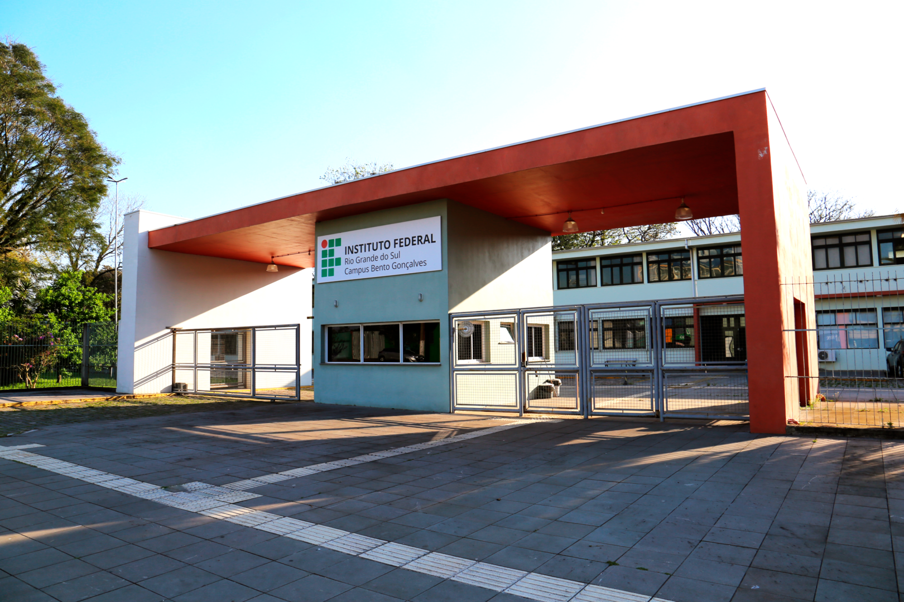

Experiências dos outros Campi com o Pré-IFRS presencial
O Pré-IFRS é um programa de todos os campi e cada um tem a liberdade de escolher como vai fazer e alguns escolhem fazer ele de forma presencial como por exemplo o Campus Bento Gonçalves eles fazem encontros semanais sendo cada um com uma matéria diferente e no fim fazem um teste para a prova do IFRS, já o Campus Feliz faz o Pré-IFRS só com a matéria de matemática e também sendo encontros semanais. Nós conversamos com a equipe de Bento e com a de Feliz e os dois quando lançam as inscrições elas acabam em dias nem completava uma semana das vagas abertas, esses campi conseguem fazer o Pré-IFRS pelo fato de terem o curso de licenciatura em letras, pedagogia, física ou matemática nos campi. Diante do sucesso que os campi Bento Gonçalves e Feliz têm tido, o Campus Erechim está pensando em criar encontros presenciais para tornar o aprendizado mais próximo e colaborativo. Esses encontros ajudariam a fortalecer a relação entre alunos e professores, criando um ambiente mais acolhedor. Compartilhar experiências entre as equipes é muito importante para melhorar o Pré-IFRS, assim todos os campi poderão oferecer uma preparação mais eficaz e envolvente. A ideia é que, além da gamificação e dos vídeos, esses momentos presenciais tornem a experiência dos estudantes mais humana, conectando todos de maneira significativa.
Esses estudantes trazem uma nova perspectiva para as aulas, compartilhando seu conhecimento e experiências recentes com os alunos. No final do conjunto das aulas, os alunos realizam um teste que simula a prova do IFRS, uma oportunidade valiosa para praticar e se preparar. Com as inscrições encerrando rapidamente, a energia do campus durante essas semanas é contagiante, com alunos formando grupos de estudo e se apoiando.